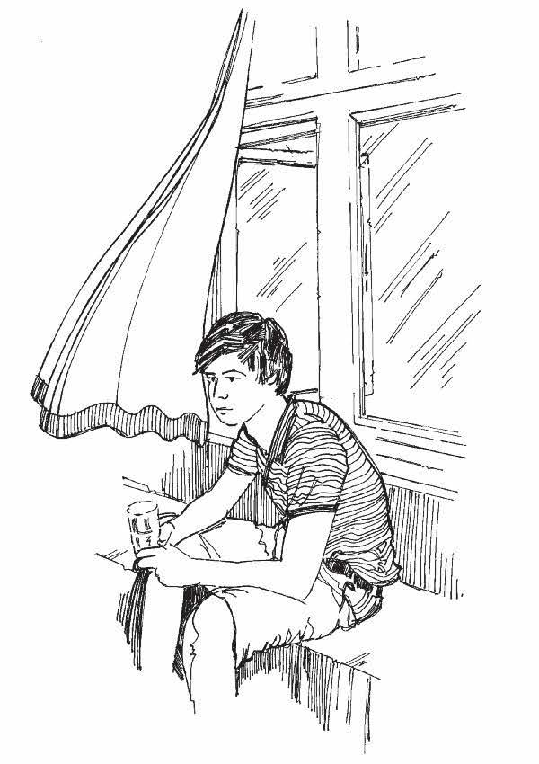

Overview
- Some diseases, including respiratory infections such as measles , meningitis and influenza, are spread by droplets in the air (coughing and sneezing). In houses that are stuffy and poorly ventilated (with little flow of air) a sick person can infect every other person living in the same house.
- Other diseases are spread via contaminated water or bad sanitation, absence of shelter or crowded living conditions. When many people live together in a small, cramped place, it can help an epidemic to spread further and quicker. Lack of clean water containers and toilets can also make it easier for a disease to spread.
What you need to know
- If germs are spread by droplets in the air, as happens with respiratory infections, germs can become more concentrated in poorly ventilated rooms or homes in which a sick person is coughing or sneezing. The sick person is therefore more likely to infect others living in the same space.
- To reduce the risk of spreading disease to others, it is a good idea to ventilate houses. Open windows or doors to allow fresh air to come in and stuffy, old air to go out.
- When many people live together in the same space, they can also catch infections more easily from one another. If possible, people should have enough space to move and breathe freely.
- Always ventilate shared or communal shelters and emergency accommodation.
- Proper shelters that protect people from rain, wind, the cold and the sun also help sick people to recover from diseases.
- Diseases that spread via contaminated water or bad sanitation (diarrhoeal diseases , cholera , typhoid , hepatitis E , for example) will spread more easily if clean water is lacking or sound, clean toilets are not set close to where people shelter.
What you can do
- When an outbreak of air-borne diseases occurs, it is important to tell your community about the importance of good ventilation and encourage them to open windows and doors regularly.
- Advise people to keep their windows open if the weather permits, especially if they are caring for a sick person.
- Cooking with charcoal or firewood in an enclosed space (a room or shelter without windows) can harm people who are sick with air-borne diseases. It is important to have enough air flow to take the smoke and fumes away.
- Talk to the community about the importance of a clean water supply, sanitation, and good food hygiene. (See Action tools 30 , 31 , 32 , 33 , 34 and 35 ).
- When people move following conflict or disaster, the shelters they move into are usually less good than those they are used to. Help people to have the best possible shelter, one that is well ventilated and has a good water supply, with latrines and waste disposal facilities close by. Encourage people to wash their hands after going to the toilet, after cleaning a child, and before preparing or eating food. Encourage people to wash water storage containers regularly with soap and water, and to keep the area around the shelter free from rubbish and animal waste.

Open doors and windows to get proper ventilation into the shelter